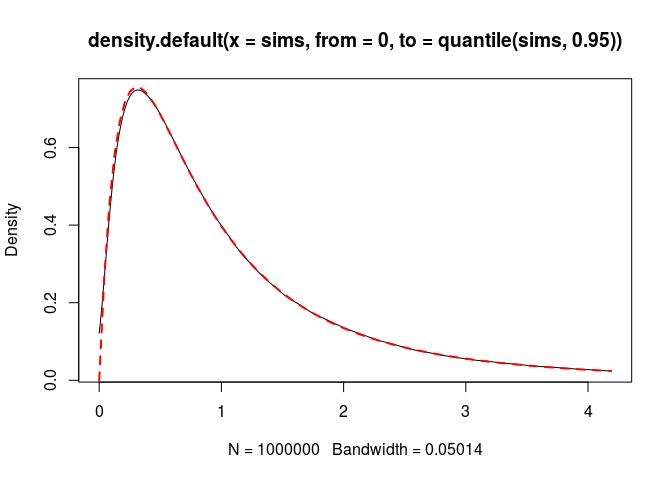
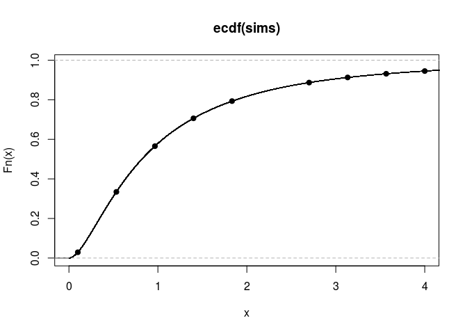

The Beta distribution of the third kind (or generalised Beta prime)
- Preliminaries: the (scaled) Beta prime distribution
- Beta distribution of the third kind
- Update 2019-09-05: generalised Beta distribution
- Cumulative distribution function
- Sampling the Beta distribution of the third kind
- Application to the Bayesian binomial model
- Application to the Bayesian “two Poisson samples” model
We present the family of so-called Beta distributions of the third kind. In the context of Bayesian statistics, it is a conjuguate family of prior distributions on the odds parameter of the binomial model. This distribution is known, but nobody provided a way to sample from it. We show how one can sample from this distribution in R.
Preliminaries: the (scaled) Beta prime distribution
The Beta distribution of the third kind generalizes the Beta distribution of the second kind, also known under the name Beta prime distribution.
The Beta prime distribution \(\mathcal{B}'(c,d,\lambda)\) is the distribution of the random variable \(\lambda\frac{U}{1-U}\) where \(U \sim \mathcal{B}(c,d)\).
Its density function at \(x \geqslant 0\) is \[ \frac{1}{\lambda^c B(c,d)} \frac{x^{c-1}}{\left(1+\frac{x}{\lambda}\right)^{c+d}}. \] Usually the definition does not include the scale parameter \(\lambda\) (that is, it is usually defined for \(\lambda=1\) only).
It is easy to implement a sampler for this distribution, the density function and the cumulative density function:
rbetaprime <- function(n, c, d, lambda = 1){
stopifnot(lambda > 0)
u <- rbeta(n, c, d)
lambda * u/(1-u)
}
dbetaprime <- function(x, c, d, lambda = 1){
stopifnot(lambda > 0)
lambda/(lambda+x)^2 * dbeta(x/lambda/(1+x/lambda), c, d)
}
pbetaprime <- function(q, c, d, lambda){
stopifnot(lambda > 0)
pbeta(q/lambda/(1+q/lambda), c, d)
}Beta distribution of the third kind
The Beta distribution of the third kind \(\mathcal{B}_3\) was firstly introduced (as far as I know) in the paper Some Poisson mixtures with a hyperscale parameter, written by myself.
For parameters \(c>0\), \(d>0\), \(\kappa \in \mathbb{R}\), \(\tau>0\), the density function of \(\mathcal{B}_3(c,d,\kappa,\tau)\) is \[ f(\phi) = \frac{1} {B(c,d){}_2\!F_1\left(c, c+d-\kappa, c+d; 1 - \frac{1}{\tau}\right)} \frac{\phi^{c-1}(1+\phi)^{-\kappa}} {\left(1+\frac{\phi}{\tau}\right)^{c+d-\kappa}}, \quad \phi \geqslant 0. \] Thus, for \(\kappa=0\), the \(\mathcal{B}_3(c,d,\kappa,\tau)\) distribution equals \(\mathcal{B}'(c,d,\tau)\), and for \(\kappa = c+d\) or \(\tau=1\), it equals \(\mathcal{B}'(c,d,1)\). Note that in general, \(\tau\) is not a scale parameter.
Let’s write a R function computing this density:
library(gsl)
Gauss2F1 <- function(a,b,c,x){
if(x>=0 && x<1){ # hyperg_2F1 works fine in this situation
hyperg_2F1(a, b, c, x)
}else{ # transform to come down to the first situation
hyperg_2F1(c-a, b, c, 1-1/(1-x)) / (1-x)^b
}
}
dB3 <- function(x, c, d, kappa, tau){
stopifnot(c > 0, d > 0, tau > 0)
if(kappa == 0){
dbetaprime(x, c, d, tau)
}else if(kappa == c+d){
dbetaprime(x, c, d, 1)
}else{
1/beta(c,d) * x^(c-1)*(1+x)^(-kappa)/(1+x/tau)^(c+d-kappa) /
Gauss2F1(c, c+d-kappa, c+d, 1-1/tau)
}
}This distribution is related to the four-parameter generalized Beta distribution introduced by Chen & Novick in the paper Bayesian analysis for binomial models with generalized beta prior distributions (1984); this distribution takes its value in \([0,1]\). They are related by an elementary transformation: \[ \Theta \sim GB4(c, d, \kappa, \tau) \quad \iff\quad \frac{\Theta}{1-\Theta} \sim \mathcal{B}_3\left(c, d, c+d-\kappa, \frac{1}{\tau}\right). \]
Update 2019-09-05: generalised Beta distribution
I’ve just discovered that the \(GB4\) distribution appears in the paper On Kummer’s distributions of type two and generalized Beta distributions written by Hamza & Vallois. It is named generalised Beta distribution in this paper, it is denoted by \(\beta_\delta(a,b,c)\) and its density function at \(u \in [0,1]\) is given by \[ \frac{1}{\beta(a,b){}_2\!F_1(-c,a;a+b;1-\delta)} u^{a-1}(1-u)^{b-1}\bigl(1+(\delta-1)u\bigr)^c \] for \(a,b,\delta>0\) and \(c \in \mathbb{R}\).
We have the following relation: if \(\Phi \sim \mathcal{B}_3(c, d, \kappa, \tau)\), then \[ \frac{\Phi}{1+\Phi} \sim \beta_{\frac{1}{\tau}}(c, d, \kappa-c-d). \]
So, maybe a better name for \(\mathcal{B}_3\) would be generalised Beta prime distribution.
Cumulative distribution function
The cumulative distribution function of \(\mathcal{B}_3\) involves the Appell hypergeometric function \(F_1\). A Fortran implementation of this function is available in the R package appell. This package has been removed from CRAN, but you can still install it. If \(\Phi \sim \mathcal{B}_3(c,d,\kappa,\tau)\), then, for \(q \geqslant 0\), \[
\Pr(\Phi \leqslant q) =
\frac{q^c F_1\left(c; \kappa, c+d-\kappa; c+1; -q, -\frac{q}{\tau}\right)}
{cB(c,d){}_2\!F_1\left(c, c+d-\kappa, c+d; 1 - \frac{1}{\tau}\right)}.
\] Here is a R implementation. I found that it works well with the option userflag = 0 of the appellf1 function.
pB3 <- function(q, c, d, kappa, tau, userflag = 0){
stopifnot(c > 0, d > 0, tau > 0)
if(kappa == 0){
pbetaprime(q, c, d, tau)
}else if(kappa == c+d){
pbetaprime(q, c, d, 1)
}else{
C <- beta(c,d) * Gauss2F1(c, c+d-kappa, c+d, 1-1/tau)
Appell <-
appell::appellf1(c, kappa, c+d-kappa, c+1, -q, -q/tau,
userflag = userflag)
q^c/c * Re(Appell$val) / C
}
}Sampling the Beta distribution of the third kind
It is not very easy to sample the \(\mathcal{B}_3\) distribution. In her master thesis, Myriam Chabot proved that it can be represented as a discrete mixture of \(\mathcal{B}_2\) distributions, and we will use this result.
This result is the following one.
For \(\tau < 1\), let \(K\) be a random variable on \(\mathbb{N}\) whose probability mass at \(k\in\mathbb{N}\) is given by \[ \frac{1}{{}_2\!F_1(d, c+d-\kappa, c+d, 1-\tau)} \frac{(1-\tau)^k}{k!} \frac{{(c+d-\kappa)}_k{(d)}_k}{{(c+d)}_k} \] and let \(\Phi\) be a random variable such that \[ (\Phi \mid K=k) \sim \mathcal{B}'(c, d+k, 1). \] Then \(\Phi \sim \mathcal{B}_3(c,d,\kappa,\tau)\).
For \(\tau > 1\), let \(K\) be a random variable on \(\mathbb{N}\) whose probability mass at \(k\in\mathbb{N}\) is given by \[ \frac{1}{{}_2\!F_1\left(c, c+d-\kappa, c+d, 1-\frac{1}{\tau}\right)} \frac{\left(1-\frac{1}{\tau}\right)^k}{k!} \frac{{(c+d-\kappa)}_k{(c)}_k}{{(c+d)}_k} \] and let \(\Phi\) be a random variable such that \[ (\Phi \mid K=k) \sim \mathcal{B}'(c+k, d, 1). \] Then \(\Phi \sim \mathcal{B}_3(c,d,\kappa,\tau)\).
So we can sample \(\mathcal{B}_3(c,d,\kappa,\tau)\) if we are able to sample these discrete distributions. To do so, we use the Runuran package.
library(Runuran)
pmf_unnormalized <- function(k, c, d, kappa, tau){
out <- numeric(length(k))
positive <- k >= 0
k <- k[positive]
out[positive] <-
if(tau < 1){
exp(k*log(1-tau) - lfactorial(k) +
lnpoch(c+d-kappa,k) + lnpoch(d,k) - lnpoch(c+d,k))
}else{
exp(k*log(1-1/tau) - lfactorial(k) +
lnpoch(c+d-kappa,k) + lnpoch(c,k) - lnpoch(c+d,k))
}
out
}
NormalizingConstant <- function(c, d, kappa, tau){
if(tau < 1){
hyperg_2F1(d, c+d-kappa, c+d, 1-tau)
}else{
hyperg_2F1(c, c+d-kappa, c+d, 1-1/tau)
}
}
Ksampler <- function(n, c, d, kappa, tau){
dist <- unuran.discr.new(
pmf = function(k) pmf_unnormalized(k, c, d, kappa, tau),
lb = 0, ub= Inf, sum = NormalizingConstant(c, d, kappa, tau)
)
unuran <- unuran.new(dist, method="dgt")
ur(unuran, n)
}
rB3 <- function(n, c, d, kappa, tau){
stopifnot(c > 0, d > 0, tau > 0)
if(tau == 1 || kappa == c+d){
rbetaprime(n, c, d, 1)
}else if(kappa == 0){
rbetaprime(n, c, d, tau)
}else{
K <- Ksampler(n, c, d, kappa, tau)
if(tau < 1){
rbetaprime(n, c, d + K, 1)
}else{
rbetaprime(n, c + K, d, 1)
}
}
}Let’s check. The density:
c <- 2; d <- 3; kappa <- 4; tau <- 5
nsims <- 1000000
sims <- rB3(nsims, c, d, kappa, tau)
plot(density(sims, from = 0, to = quantile(sims, 0.95)))
curve(dB3(x, c, d, kappa, tau), add = TRUE, col = "red",
lty = "dashed", lwd = 2)
The cumulative distribution function:
q <- seq(0.1, 4, length.out = 10)[-6]
cdfValues <- sapply(q, function(x) pB3(x, c, d, kappa, tau))
empirical_cdf <- ecdf(sims)
plot(empirical_cdf, xlim = c(0,4))
points(q, cdfValues, pch=19)
I’ve removed the sixth value of the vector q because there is a crash of appellf1 for this value:
q <- seq(0.1, 4, length.out = 10)
pB3(q[6], c, d, kappa, tau)
## Error in appell::appellf1(c, kappa, c + d - kappa, c + 1, -q, -q/tau, : f1conv: Computation not possibleIt works with the option userflag = 1:
Finally perhaps the option userflag = 1 is a better default value:
cdfValues <- sapply(q, function(x){
pB3(x, c, d, kappa, tau, userflag = 1)
})
plot(empirical_cdf, xlim = c(0,4))
points(q, cdfValues, pch=19)
Application to the Bayesian binomial model
Consider the binomial statistical model parameterized by the odds ratio \(\phi\): \[ L(\phi \mid x) \propto \frac{\phi^x}{(1+\phi)^n}. \] Take a \(\mathcal{B}_3(c,d,\kappa,\tau)\) prior distribution on \(\phi\): \[ \pi(\phi) \propto \frac{\phi^{c-1}(1+\phi)^{-\kappa}} {\left(1+\frac{\phi}{\tau}\right)^{c+d-\kappa}} \] Then the posterior distribution on \(\phi\) is \(\mathcal{B}_3(c+x,d+n-x,\kappa+n,\tau)\).
Application to the Bayesian “two Poisson samples” model
Consider the statistical model given by two independent observations \[ x \sim \mathcal{P}(\lambda S), \quad y\sim\mathcal{P}(\mu T) \] where \(S\) and \(T\) are known “sample sizes”. We parametrize the model by \(\mu\) and \(\phi := \frac{\lambda}{\mu}\).
Assigning a Gamma prior distribution \(\mathcal{G}{B}(a,b)\) on \(\mu\), it is not difficult to get \[ (\mu \mid \phi,x,y) \sim\mathcal{G}(a+x+y, b + \phi S + T). \] In their paper A Bayesian framework for the ratio of two Poisson rates in the context of vaccine efficacy trials (2011), Laurent & Legrand derived the marginal likelihood on \(\phi\) in the case of the semi-conjuguate family of prior distributions. Their result holds as long as \(\mu\) and \(\phi\) are independent under the prior distribution, and this result is \[ \widetilde{L}(\phi \mid x,y) \propto \frac{\phi^x}{{(1+\rho\phi)}^{a+x+y}} \] where \(\rho = \frac{S}{T+b}\).
Now, let’s assign a \(\mathcal{B}'(c,d,\tau)\) prior distribution on \(\phi\). Then the posterior distribution on \(\phi\) is given by \[ \pi(\phi \mid x,y) \propto \pi(\phi) \widetilde{L}(\phi \mid x,y) \propto \frac{\phi^{c+x-1}(1+\rho\phi)^{-(a+x+y)}} {\left(1+\frac{\phi}{\tau}\right)^{c+d}}, \] and by noting that \(\frac{\phi}{\tau} = \frac{\rho\phi}{\rho\tau}\), we recognize the scaled \(\mathcal{B}_3\) distribution \[ (\phi \mid x,y) \sim \frac{1}{\rho} \times \mathcal{B}_3(c+x, a+d+y, a+x+y, \rho\tau). \] In particular, if \(\tau = \frac{1}{\rho} = \frac{T+b}{S}\), then we find \[ (\phi \mid x,y) \sim \mathcal{B}_2(c+x, a+d+y, \tau), \] and this is the situation of the semi-conjuguate family studied by Laurent & Legrand.